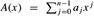
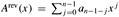
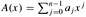

|
|
< Day Day Up > |
|
The coefficient and point-value representations of polynomials are in a sense equivalent; that is, a polynomial in point-value form has a unique counterpart in coefficient form. In this section, we introduce the two representations and show how they can be combined to allow multiplication of two degree-bound n polynomials in Θ(n lg n) time.
A coefficient representation of a polynomial  of degree-bound n is a vector of coefficients a = (a0, a1,..., an-1). In matrix equations in this chapter, we shall generally treat vectors as column vectors.
The coefficient representation is convenient for certain operations on polynomials. For example, the operation of evaluating the polynomial A(x) at a given point x0 consists of computing the value of A(x0). Evaluation takes time Θ(n) using Horner's rule:
A(x0) = a0 + x0(a1 + x0(a2 + ··· + x0(an-2 + x0(an-1)) )).
Similarly, adding two polynomials represented by the coefficient vectors a = (a0, a1,..., an-1) and b = (b0, b1,..., bn-1) takes Θ(n) time: we just produce the coefficient vector c = (c0, c1,..., cn-1), where cj = aj + bj for j = 0, 1,..., n - 1.
Now, consider the multiplication of two degree-bound n polynomials A(x) and B(x) represented in coefficient form. If we use the method described by equations (30.1) and (30.2), polynomial multiplication takes time Θ(n2), since each coefficient in the vector a must be multiplied by each coefficient in the vector b. The operation of multiplying polynomials in coefficient form seems to be considerably more difficult than that of evaluating a polynomial or adding two polynomials. The resulting coefficient vector c, given by equation (30.2), is also called the convolution of the input vectors a and b, denoted c = a ⊗ b. Since multiplying polynomials and computing convolutions are fundamental computational problems of considerable practical importance, this chapter concentrates on efficient algorithms for them.
A point-value representation of a polynomial A(x) of degree-bound n is a set of n point-value pairs
{(x0, y0), (x1, y1),..., (xn-1, yn-1)}
such that all of the xk are distinct and
for k = 0, 1,.., n - 1. A polynomial has many different point-value representations, since any set of n distinct points x0, x1,..., xn-1 can be used as a basis for the representation.
Computing a point-value representation for a polynomial given in coefficient form is in principle straightforward, since all we have to do is select n distinct points x0, x1,..., xn-1 and then evaluate A(xk) for k = 0, 1,..., n - 1. With Horner's method, this n-point evaluation takes time Θ(n2). We shall see later that if we choose the xk cleverly, this computation can be accelerated to run in time Θ(n lg n).
The inverse of evaluation -determining the coefficient form of a polynomial from a point-value representation -is called interpolation. The following theorem shows that interpolation is well defined, assuming that the degree-bound of the interpolating polynomial equals the number of given point-value pairs.
For any set {(x0, y0), (x1, y1),..., (xn-1, yn-1)} of n point-value pairs such that all the xk values are distinct, there is a unique polynomial A(x) of degree-bound n such that yk = A(xk) for k = 0, 1,..., n - 1.
Proof The proof is based on the existence of the inverse of a certain matrix. Equation (30.3) is equivalent to the matrix equation
The matrix on the left is denoted V (x0, x1,..., xn-1) and is known as a Vander-monde matrix. By Exercise 28.1-11, this matrix has determinant
and therefore, by Theorem 28.5, it is invertible (that is, nonsingular) if the xk are distinct. Thus, the coefficients aj can be solved for uniquely given the point-value representation:
a = V (x0, x1,..., xn-1)-1 y.
The proof of Theorem 30.1 describes an algorithm for interpolation based on solving the set (30.4) of linear equations. Using the LU decomposition algorithms of Chapter 28, we can solve these equations in time O(n3).
A faster algorithm for n-point interpolation is based on Lagrange's formula:
You may wish to verify that the right-hand side of equation (30.5) is a polynomial of degree-bound n that satisfies A(xi) = yi for all i. Exercise 30.1-5 asks you how to compute the coefficients of A using Lagrange's formula in time Θ(n2).
Thus, n-point evaluation and interpolation are well-defined inverse operations that transform between the coefficient representation of a polynomial and a point-value representation.[1] The algorithms described above for these problems take time Θ(n2).
The point-value representation is quite convenient for many operations on polynomials. For addition, if C(x) = A(x) + B(x), then C(xk) = A(xk) + B(xk) for any point xk. More precisely, if we have a point-value representation for A,
{(x0, y0), (x1, y1),..., (xn-1, yn-1)},
and for B,
(note that A and B are evaluated at the same n points), then a point-value representation for C is
Thus, the time to add two polynomials of degree-bound n in point-value form is Θ(n).
Similarly, the point-value representation is convenient for multiplying polynomials. If C(x) = A(x) B(x), then C(xk) = A(xk)B(xk) for any point xk, and we can pointwise multiply a point-value representation for A by a point-value representation for B to obtain a point-value representation for C. We must face the problem, however, that the degree-bound of C is the sum of the degree-bounds for A and B. A standard point-value representation for A and B consists of n point-value pairs for each polynomial. Multiplying these together gives us n point-value pairs for C, but since the degree-bound of C is 2n, we need 2n point-value pairs for a point-value representation of C. (See Exercise 30.1-4.) We must therefore begin with "extended" point-value representations for A and for B consisting of 2n point-value pairs each. Given an extended point-value representation for A,
{(x0,y0),(x1,y1),...,(x2n-1,y2n-1)},
and a corresponding extended point-value representation for B,
then a point-value representation for C is
Given two input polynomials in extended point-value form, we see that the time to multiply them to obtain the point-value form of the result is Θ(n), much less than the time required to multiply polynomials in coefficient form.
Finally, we consider how to evaluate a polynomial given in point-value form at a new point. For this problem, there is apparently no approach that is simpler than converting the polynomial to coefficient form first, and then evaluating it at the new point.
Can we use the linear-time multiplication method for polynomials in point-value form to expedite polynomial multiplication in coefficient form? The answer hinges on our ability to convert a polynomial quickly from coefficient form to point-value form (evaluate) and vice-versa (interpolate).
We can use any points we want as evaluation points, but by choosing the evaluation points carefully, we can convert between representations in only Θ(n lg n) time. As we shall see in Section 30.2, if we choose "complex roots of unity" as the evaluation points, we can produce a point-value representation by taking the Discrete Fourier Transform (or DFT) of a coefficient vector. The inverse operation, interpolation, can be performed by taking the "inverse DFT" of point-value pairs, yielding a coefficient vector. Section 30.2 will show how the FFT performs the DFT and inverse DFT operations in Θ(n lg n) time.
Figure 30.1 shows this strategy graphically. One minor detail concerns degree-bounds. The product of two polynomials of degree-bound n is a polynomial of degree-bound 2n. Before evaluating the input polynomials A and B, therefore, we first double their degree-bounds to 2n by adding n high-order coefficients of 0. Because the vectors have 2n elements, we use "complex (2n)th roots of unity," which are denoted by the w2n terms in Figure 30.1.
Given the FFT, we have the following Θ(n lg n)-time procedure for multiplying two polynomials A(x) and B(x) of degree-bound n, where the input and output representations are in coefficient form. We assume that n is a power of 2; this requirement can always be met by adding high-order zero coefficients.
Double degree-bound: Create coefficient representations of A(x) and B(x) as degree-bound 2n polynomials by adding n high-order zero coefficients to each.
Evaluate: Compute point-value representations of A(x) and B(x) of length 2n through two applications of the FFT of order 2n. These representations contain the values of the two polynomials at the (2n)th roots of unity.
Pointwise multiply: Compute a point-value representation for the polynomial C(x) = A(x)B(x) by multiplying these values together pointwise. This representation contains the value of C(x) at each (2n)th root of unity.
Interpolate: Create the coefficient representation of the polynomial C(x) through a single application of an FFT on 2n point-value pairs to compute the inverse DFT.
Steps (1) and (3) take time Θ(n), and steps (2) and (4) take time Θ(n lg n). Thus, once we show how to use the FFT, we will have proven the following.
The product of two polynomials of degree-bound n can be computed in time Θ(n lg n), with both the input and output representations in coefficient form.
Evaluating a polynomial A(x) of degree-bound n at a given point x0 can also be done by dividing A(x) by the polynomial (x - x0) to obtain a quotient polynomial q(x) of degree-bound n - 1 and a remainder r, such that
A(x) = q(x)(x - x0) + r.
Clearly, A(x0) = r. Show how to compute the remainder r and the coefficients of q(x) in time Θ(n) from x0 and the coefficients of A.
Derive a point-value representation for  from a point-value representation for , assuming that none of the points is 0.
Prove that n distinct point-value pairs are necessary to uniquely specify a polynomial of degree-bound n, that is, if fewer than n distinct point-value pairs are given, they fail to specify a unique polynomial of degree-bound n. (Hint: Using Theorem 30.1, what can you say about a set of n - 1 point-value pairs to which you add one more arbitrarily-chosen point-value pair?)
Show how to use equation (30.5) to interpolate in time Θ(n2). (Hint: First compute the coefficient representation of the polynomial Πj(x - xj) and then divide by (x - xk) as necessary for the numerator of each term; see Exercise 30.1-2. Each of the n denominators can be computed in time O(n).)
Explain what is wrong with the "obvious" approach to polynomial division using a point-value representation, i.e., dividing the corresponding y values. Discuss separately the case in which the division comes out exactly and the case in which it doesn't.
Consider two sets A and B, each having n integers in the range from 0 to 10n. We wish to compute the Cartesian sum of A and B, defined by
C = {x + y : x ∈ A and y ∈ B}.
Note that the integers in C are in the range from 0 to 20n. We want to find the elements of C and the number of times each element of C is realized as a sum of elements in A and B. Show that the problem can be solved in O(n lg n) time. (Hint: Represent A and B as polynomials of degree at most 10n.)
[1]Interpolation is a notoriously tricky problem from the point of view of numerical stability. Although the approaches described here are mathematically correct, small differences in the inputs or round-off errors during computation can cause large differences in the result.
|
|
< Day Day Up > |
|